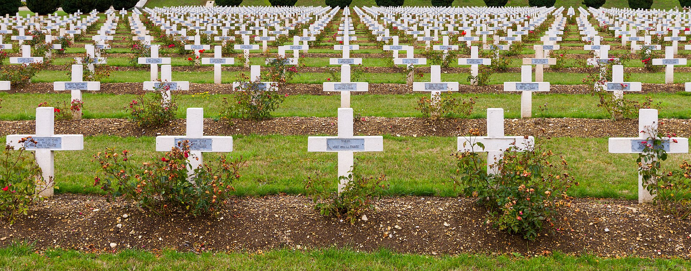

Voyages-hommage · Meuse · 1914–1918
Nous accompagnons les familles des soldats tombés en Meuse sur les traces de leurs proches — avec les enfants, avec les petits-enfants, avec ceux qui n'ont jamais eu le droit de connaître.
Verdun & Douaumont
12 – 17 avril 2026 · 14 places

(a) Itinéraires
Chaque voyage est pensé comme une traversée : un lieu, une histoire, une famille. Les enfants y trouvent leur place, sans jamais trahir la gravité du lieu.
(b) Pour les familles
Chaque voyage inclut un temps de découverte pensé pour les plus jeunes : carnet de route, atelier d'écriture sur les noms, et un coquelicot en laiton à emporter.
(c) Témoignages
(d) Participer
Chaque année, nous ouvrons 14 places par itinéraire. Les familles sont prioritaires. Les enfants sont attendus. Les dons permettent de financer les places des familles les plus modestes.
(e) Presse